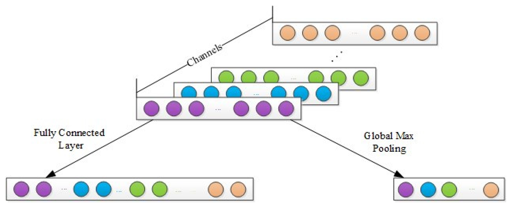
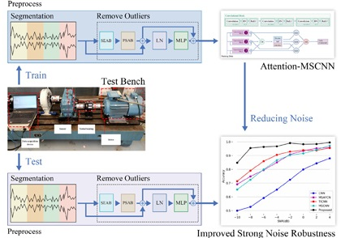

A Novel Deep Convolutional Neural Network
Combining Global Feature Extraction and
Detailed Feature Extraction for
Bearing Compound Fault Diagnosis
This study researched the application of a convolutional neural network (CNN) to a bearing compound fault diagnosis. The proposed idea lies in the ability of CNN to automatically extract fault features from complex raw signals. In our approach, to extract more effective features from a raw signal, a novel deep convolutional neural network combining global feature extraction with detailed feature extraction (GDDCNN) is proposed. First, wide and small kernel sizes are separately adopted in shallow and deep convolutional layers to extract global and detailed features. Then, the modified activation layer with a concatenated rectified linear unit (CReLU) is added following the shallow convolution layer to improve the utilization of shallow global features of the network. Finally, to acquire more robust features, another strategy involving the GMP layer is utilized, which replaces the traditional fully connected layer. The performance of the obtained diagnosis was validated on two bearing datasets. The results show that the accuracy of the compound fault diagnosis is over 98%. Compared with three other CNN-based methods, the proposed model demonstrates better stability.
Sensors
2023

Deep Residual Multiscale Convolutional Neura
Network With Attention Mechanism for Bearing
Fault Diagnosis Under Strong Noise
Environment
In recent years, deep learning (DL) methods have gained much success in the area of intelligent fault diagnosis. However, due to the fact that the working conditions are various and the noise is inevitable, degradation of previous model is very serious. To address the challenge of bearing fault detection under strong noise environment, this article proposed a novel antinoise deep residual multiscale convolutional neural network with attention mechanism named Attention-MSCNN. First, dynamic dropout is used to improve the antinoise ability by introducing artificial noise into the training process. In addition, we design a residual connection between input and the convolved features to fully capture the characteristics of the initial input. Finally, a novel denoised multihead attention mechanism is applied to remove excess noise in raw input and obtain the relationships between long time series. The experimental results show that Attention-MSCNN can achieve robust anti strong noise performance with over 85% accuracy on the Case Western Reserve University (CWRU) dataset. On the self-collected two-stage gear drive test bench, our model achieves an accuracy of over 99% under strong noise environment. Thus, Attention-MSCNN successfully solves the problem of low detection accuracy of previous models under strong noise environment.
IEEE Sensors
2023